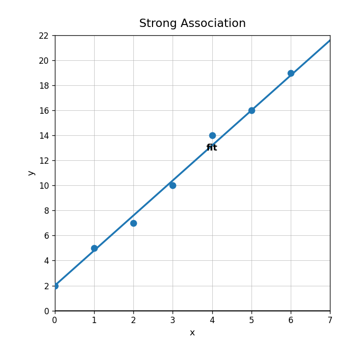
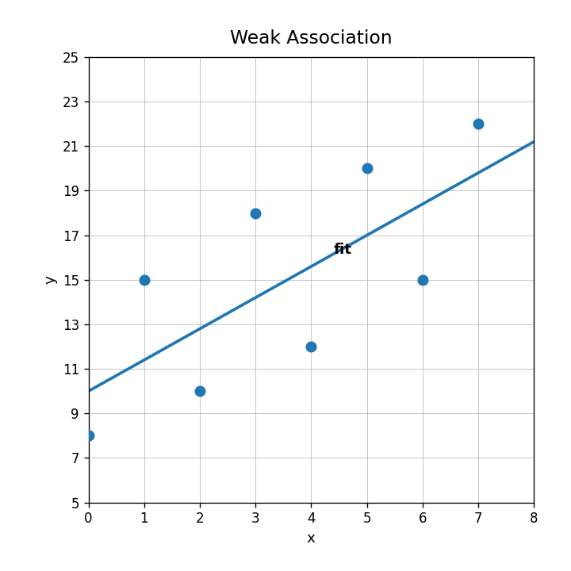
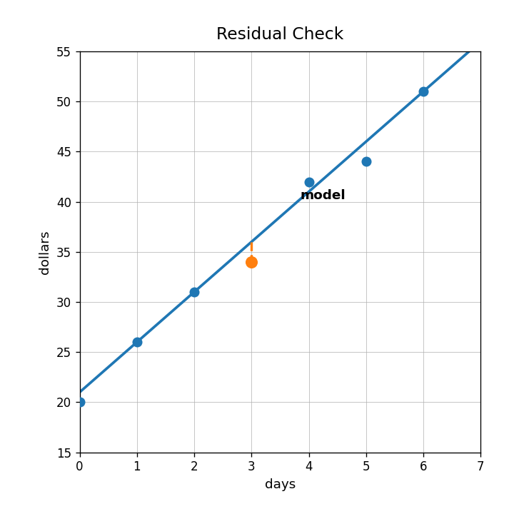
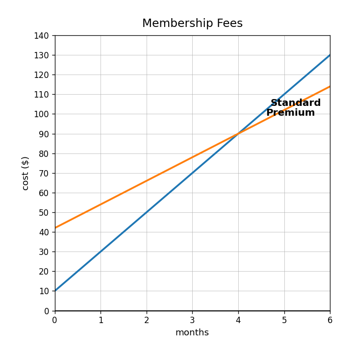
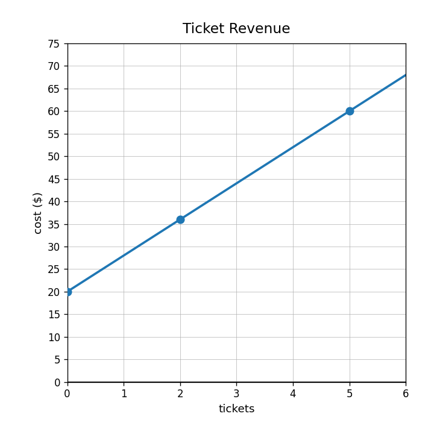

Which data set appears to have the stronger linear association? Explain using the displays.


A data set is modeled by $S=2.5h+68$. Predict $S$ when $h=6$ and interpret the result.
Use the residual check graph. Is the highlighted point above or below the model? What does that mean in context?

A student uses a line of fit to predict a value far outside the data range. Explain why that prediction may be unreliable and what information would make the model stronger.
Which has the greater rate of change: $y=3x+50$ or $y=11x+2$?
Which has the greater starting value: $P=19t+6$ or $Q=7t+44$?
| $x$ | 0 | 1 | 2 | 3 |
|---|---|---|---|---|
| $y$ | 14 | 23 | 32 | 41 |
Identify the starting value.
Use the membership graph. Which option is less expensive at the beginning?

Compare the table to $y=10x+5$. Which relationship has the greater rate of change?
| $x$ | 0 | 1 | 2 | 3 |
|---|---|---|---|---|
| Table B | 22 | 28 | 34 | 40 |
A graph has $y$-intercept 12 and rises 5 units for every 1 unit right. Compare it to $y=3x+20$.
A student says Plan A is better because it has the smaller slope. What else must be considered before deciding?
Design two plans that cost the same at $x=4$ but have different starting values and rates of change. Show your equations.
In $C=8h+20$, what could $h$ represent if $C$ is total cost?
Use the ticket graph to write a possible equation.

For a ticket situation, a student solves and gets $x=-3$ tickets. Explain why the algebraic result may not be reasonable in context.
Create a real-world situation that leads to an equation with solution $x=8$. Write the equation and explain the solution.